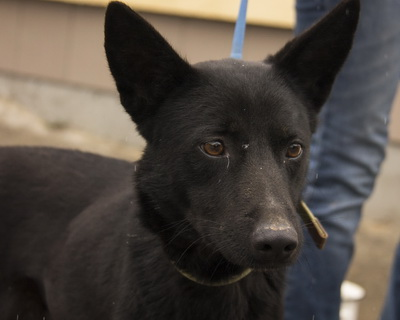
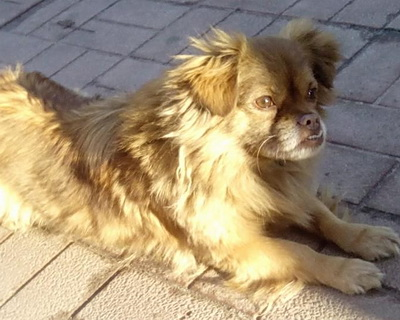

|

|
Луга
Молода,
розумна собака середнього розміру, неметушлива та врівноважена,буде
хорошим сторожем та другом. За птахами не ганяється, уживається з іншими
тваринами, має навички охоронця. Самка, стерилізована та вакцинована.
Телефон опікуна - 063-941-2518 Марина
На прилаштування 18.01.15 Опубліковано: 18.01.15
Венді
Метис
мисливської породи веймаранер, має відмінний нюх, слух і гарний голос.
Самка, стерилізована та вакцинована. Середнього розміру, короткошерстна.
Весела та жартівлива. Телефон опікуна - 063-941-2518 Марина На прилаштування 18.01.15 Опубліковано: 18.01.15
Грунька
Невелика
молода собачка, розумна, ласкава, знає команди. Самка, стерилізована та
вакцинована. Телефон опікуна - 063-941-2518 Марина На прилаштування 18.01.15 Опубліковано: 18.01.15
Крупний молодий самець (1)
Самець, крупний, вік 1-2 роки, не стерилізований. Контактний телефон - 063-941-2518 На прилаштування 23.01.15 Опубліковано: 23.01.15
Самка, середнього розміру (2)
Самка, не дуже крупна, вік 1.5 роки, стерилізована. Контактний телефон - 063-941-2518 На прилаштування 23.01.15 Опубліковано: 23.01.15
Самець, середнього розміру (3)
Самець, не дуже крупний, вік 1-1.5 роки, стерилізований. Контактний телефон - 063-941-2518 На прилаштування 23.01.15 Опубліковано: 23.01.15
Самець, маленького розміру (4)
Самець, вік 2 роки, маленький, не стерилізований. Контактний телефон - 063-941-2518 На прилаштування 23.01.15 Опубліковано: 23.01.15
Самка, середнього розміру (5)
Самка, вік 1-2 роки, не дуже крупна, стерилізована. Контактний телефон - 063-941-2518 На прилаштування 23.01.15 Опубліковано: 23.01.15
Самець, крупний (6)
Самець, крупний, вік 3-5 років, не стерилізований. Контактний телефон 063-941-2518 - Марина На прилаштування 29.01.15 Опубліковано: 29.01.15
Самка, середнього розміру (7)
Самка, середнього розміру, вік 1 рік, стерилізована. Контактний телефон 063-941-2518 - Марина На прилаштування 29.01.15 Опубліковано: 29.01.15
Самка, середнього розміру (8)
 Самка, середнього розміру, вік 1-2 роки, не стерилізована. Контактний телефон 063-941-2518 - Марина На прилаштування 29.01.15 Опубліковано: 29.01.15
Метис вівчарки (9)
Самець, метис вівчарки, крупний, вік 2-3 роки, не стерилізований. Контактний телефон 063-941-2518 - Марина На прилаштування 29.01.15 Опубліковано: 29.01.15
Самка, середнього розміру (10)
Самка, середнього розміру, вік 1-2 роки, стерилізована. Контактний телефон - 063-941-2518 Марина На прилаштування 29.01.15 Опубліковано: 29.01.15
Самка, крупна (11)
Самка, крупна, вік 2 роки, стерилізована. Контактний телефон 063-941-2518 Марина На прилаштування 29.01.15 Опубліковано: 29.01.15
Самець, крупний (12)
Самець, крупний, вік 1-2 роки, стерилізований. Контактний телефон 063-941-2518 Марина На прилаштування 29.01.15 Опубліковано: 29.01.15
Самець, болонка (13)
Болонка, самець, вік 3 роки, не стерилізований. Контактний телефон 063-941-2518 Марина На прилаштування 29.01.15 Опубліковано: 29.01.15
Самка, невелика (14)
Самка, невелика, вік до 1 року, не стерилізована. Контактний телефон 063-941-2518 Марина На прилаштування 29.01.15 Опубліковано: 29.01.15
Вівчарка, самка (15)
Вівчарка, самка, крупна, вік 2 роки, не стерилізована. Контактний телефон 063-941-2518 Марина На прилаштування 29.01.15 Опубліковано: 29.01.15
Самець середнього розміру (16)
Кобель, не дуже крупний, вік 3-4 роки, стерилізований. Контактний телефон 063-941-2518 Марина На прилаштування 29.01.15 Опубліковано: 29.01.15
Плямка
Молоденька, вишукана, граційна, віддана, з гарними манерами, дуже добра собачка. Контактний телефон: 096 270 61 60 Віка На прилаштування 02.02.15 Опубліковано: 02.02.15
Шарік
1
рік, невеликий, висотою всього 30 см. Оброблений від паразитів,
адекватний, не агресивний, проситься в туалет, хорошим варіантом може
також бути подвір'я з будкою. Контактний телефон: 096 781 93 52 На прилаштування 02.02.15 Опубліковано: 02.02.15
Чорні цуценята (17)
Кмітливі та грайливі, братик і сестричка, Лео та Куіні шукають родину. Контактний телефон: 067 79 71 424 Оксана На прилаштування 02.02.15 Опубліковано: 02.02.15
Довгов'яз
Великий, добрий, але дуже сумний пес шукає родину. Не на ланцюг. Контактний телефон: 096 270 61 60 Віка На прилаштування 03.02.15 Опубліковано: 03.02.15
Нессі, пекінес
 Метис
пекінеса - дівчинка Нессі втекла від попередніх господарів, бо не дбали
про собачку. З того часу прибилась до одного з магазинів в місті.
Віддаємо Нессі відповідальним людям, які готові піклуватись про собачку,
вигулювати її на повідку-рулетці, щоб не втекла, бо собачка дуже
рухлива, привітна до всіх. Контактний телефон: 096 270 61 60 Віка На прилаштування 03.02.15 Опубліковано: 03.02.15
Бім
Дуже
розумний пес Бім був поводирем для незрячої господині. Вона померла і
Бім шукає новий дім. Йому близько 3 років, кастрований, вакцинований.
Підійде приватний сектор, з проживанням у домі чи вольєрі. Контактний
телефон: 067 878 57 05, 063 072 50 39 Ліда На прилаштування 03.02.15 Опубліковано: 03.02.15
Чудові цуценята (18)
4 хлопчики, 5 дівчаток м.Дрогобич, контактний телефон: 097 011 78 26 Наталя На прилаштування 06.02.15 Опубліковано: 06.02.15
Чудові цуценята (19)
 4 хлопчики, 5 дівчаток м.Дрогобич, контактний телефон: 097 011 78 26 Наталя На прилаштування 06.02.15 Опубліковано: 06.02.15
Цуценята з Солонки (20)
Цуценята-дівчатка, кремового окрасу, Солонка. Контактний телефон: 067 75 75 000 Олег На прилаштування 08.02.15 Опубліковано: 08.02.15
Самка, середнього розміру (21)
Лагідна дівчинка, вушка висячі. Контактні телефон: 096 73 21 968 Аня, 067 87 85 705, 063 072 50 39 Ліда На прилаштування 08.02.15 Опубліковано: 08.02.15
Тося
Тимчасово
Тося живе на території фірми зоозахисника. Була наляканою і розгубленою
(очевидно, її били), зараз трохи освоїлась, почала проявляти охоронні
якості. Близько року, середнього зросту, стерилізована і вакцинована (з
довідкою). Контактний телефон: 067 878 57 05, 063 07 250 39 Ліда На прилаштування 08.02.15 Опубліковано: 08.02.15
|
© 2015 www.ratusha.lviv.ua